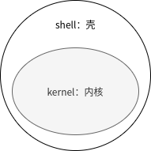
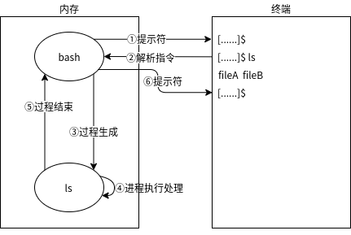

2.2 了解shell的使用¶
shell¶
shell是linux内核与用户关联的用户界面。它解释用户输入的命令，请求内核执行并将结果返回给用户。shell也被称为命令解释器，因为它可以逐个接收并解释用户的指令。Linux的标准shell是bash，但是也可以使用其他shell。
shell显示用户对命令的输入与输出。
在以下的示例中，将显示在bash shell的命令提示符“$”下运行“ls”命令，“ls”命令显示用户在当前的目录下的文件列表。打印出“file A”与“file B”两个文件的内容作为“ls”命令的执行结果。
内部命令和外部命令¶
对于在命令提示符中输入的命令，可以分为外部命令和内部命令。
内部命令
是编译入shell内部的指令，如“cd”、“echo”等都是内部命令。
外部命令
不在shell内部，而是放在/usr/bin，/usr/sbin等目录下的命令。
shell在shell的环境变量PATH注册的路径下寻找并运行外部命令。因为内部命令是shell内部的命令，所以不按照环境变量PATH即可执行。下面对设定PATH环境变量（下面的示例中/usr/bin与/usr/sbin目录被PATH环境变量注册）举例。
PATH=/usr/bin:/usr/sbin
因此，当您执行未注册在环境变量中的路径下的命令时，会提示“没有找到命令”（简体中文）或“command not found”（英文）。但是，您也使用绝对路径或相对路径“./”来执行指定的命令。
shell变量和环境变量¶
在shell中有很多环境变量，常见有注册了外部命令的目录的PATH环境变量，显示语言环境是简体中文还是英文的LANG语言环境变量等。如果用户输入环境变量的值，则shell会变更该环境变量。
shell涉及到的变量有两种：shell变量和环境变量。
shell变量
仅使用shell设置的变量，子进程不继承。
环境变量
在shell外使用的和在外部命令中所使用的变量称为环境变量。子进程继承环境变量。我们可以将shell变量声明为环境变量。
通过export命令可以打印出环境变量中特别声明的指定参数。因此，子进程被设置为继承环境变量。由于启动的程序的子进程继承环境变量，所以我们可以从应用程序中使用环境变量。
下图通过从bash中运行data的命令的示例来讲解在date子进程中环境变量与shell变量之间的关系与变化。data命令的子进程继承bash环境变量PATH和LANG，但不会继承shell变量的PS1，而不是环境变量。

由于环境变量是通过输出shell变量来制作的，预先提供的变量有很多是重复的。下面列出了主要shell变量：
变量名称 |
说明 |
|---|---|
PATH |
命令检索路径 |
HOME |
用户的家目录 |
PS1 |
定义命令提示符 |
LANG |
语言 |
通过使用 shell_name=value 可以定义shell变量的值。使用 $shell_name 或 ${shell_name} 查看有关值的设定。使用“unset”命令可以删除shell变量。
以下是通过LANG的环境变量来切换语言环境（简体中文/英文）的示例：
# echo $LANG ←打印出shell变量LANG的值
zh_CN.UTF-8
# date ←现在的语言是zh_CN.UTF-8，显示的时间是中文字体
2019年 11月 26日 星期二 17:16:29 CST
# unset LANG ←取消LANG变量的值
# echo $LANG ←打印出shell变量LANG的值
←没有打印出变量LANG的值
# date ←再次查看系统时间，这次打印出的时间是英文字体
Tue Nov 26 17:16:50 CST 2019
# LANG=zh_CN.UTF-8 ←指定变量LANG的值为zh_CN.UTF-8，也就是中文字体
# echo $LANG ←打印出shell变量的LANG的值
zh_CN.UTF-8
# date ←刚才设定的变量LANG已经生效
2019年 11月 26日 星期二 17:16:29 CST
如果要打印在现在的shell中定义的shell变量的列表，可以使用不加任何指定参数的“set”命令。如果要显示环境变量，则使用“env”命令或是“printenv”命令。
# export LINUX="CentOS8" ←指定环境变量
# env
...忽略...
HOSTNAME=centos.localdomain
LINUX=CentOS8 ←显示指定的环境变量
USER=root
PWD=/root
HOME=/root
...忽略...
除此之外，在bash中，shell变量“PS1”被默认定义为命令提示符，“PS1”的缺省配置为 ['\s-\v\$ '] 。在值为 ['\s-\v\$ '] 的情况下，如下表所示，\s 的缺省值为“bash”，\v 的缺省值为当前bash的版本，最终显示为 [bash-4.2$ ]。
在普通用户的命令提示符中“PS1”的值中一般有“$”，如果是root用户（系统管理员），则显示为“#”。
标示 |
说明 |
|---|---|
\s |
shell的名称 |
\v |
bash的版本 |
\u |
用户名 |
\h |
第一个“.”前的主机名 |
\w |
当前工作目录 |
注解
我们可以自定义命令提示符的显示内容，详细配置可以参照第三章。